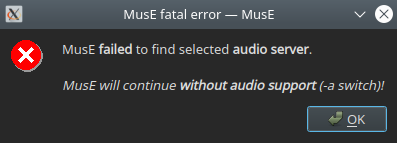

Para ponerse en marcha
Inicio rápido
…para gente impaciente
Instale MusE desde el repositorio de su distribución Liunx. Para obtener un buen rendimiento, inicie http://jackaudio.org/Jack en una terminal con el siguiente comando: $> jackd -d alsa -d hw:0 -p 256 O, si lo prefiere, use la utilidad de sistema http://qjackctl.sourceforge.net/QJackCtl para obtener ayuda acerca de cómo iniciar a Jack. Después de esto, inicie MusE desde el menú o inicie otra terminal y escriba $> muse4 Si esto no funcionó, siga leyendo para saber un poco más cómo comenzar.
… para gente REALMENTE impaciente
MusE ahora es compatible con PulseAudio; en este escenario ni siquiera necesita Jack. Sin embargo, para la reproducción en tiempo real la latencia probablemente será un problema, aunque hay casos de uso donde, por ejemplo usando solo la mezcla, funciona perfectamente.
Escriba muse4 -t para iniciar MusE con el entorno PulseAudio. $> muse4 -t
Instalación desde binarios
Hay varias formas de instalar MusE dependiendo de su situación. La forma más conveniente es instalar una versión preempaquetada de la distribución Linux en uso. El inconveniente de esto es que puede que no sea la versión más reciente.
AppImage (programa ejecutable)
A partir de la versión 4.0, MusE está disponible como una AppImage precompilada e independiente de la distribución, tanto para las versiones previas (pre-releases) como para la versión de desarrollo actual (master). Todo lo que tiene que hacer es descargar la AppImage deseada y hacer que el archivo descargado sea ejecutable (algunos entornos de escritorio ofrecen hacerlo por usted y también crear automáticamente una entrada en el menú de inicio).
Instalación desde el código fuente
Construir MusE desde la fuente no es difícil, hay una serie de requisitos previos que deben cumplirse, pero la construcción no debería ser problemática (ja, las famosas últimas palabras).
Eche un vistazo a las instrucciones detalladas en el archivo README incluído en el archivo del paquete MusE, o en:
https://github.com/muse-sequencer/muse
Hardware
MusE en la plataforma Linux admite midi a través de ALSA y jack-midi; y audio a través de Jack y PulseAudio. Para obtener información sobre qué hardware es compatible, hay algunos lugares que se pueden consultar:
- Matriz de la tarjeta de sonido Alsa en http://www.alsa-project.org/main/index.php/Matrix:Main
- http://FFADO.org para dispositivos devices.
Además, como es habitual para un buen enfoque para Linux y el código abierto, los diversos foros disponibles en Internet suelen contener buena información. Es probable que alguien ya haya probado su configuración y/o haya tenido su problema específico y la solución ya esté escrita.
En estos días (2021) la mayoría de las tarjetas de sonido están basadas en USB y muchas están listas para usar. Pero, por favor, no lo tome como verdadero si está por comprar una tarjeta de sonido. Por favor investigue antes de comprar.
Consideraciones de audio
En el caso estándar, MusE espera encontrar y conectarse al servidor de audio Jack http://jackaudio.org. Asegúrese de que Jack esté instalado (si MusE se instaló con un paquete de distribución, es muy probable que Jack ya se ecuentre instalado como dependencia). Para que Jack funcione con el mejor rendimiento, su sistema deberá estar lo suficientemente ajustado para permitir que funcione con capacidades en tiempo real. La configuración en tiempo real del sistema operativo consta normalmente de dos partes:
- De forma predeterminada, en la mayoría de las distribuciones, solo el superusuario permite que las aplicaciones configuren capacidades en tiempo real. Consulte el APÉNDICE de configuración en tiempo real.
- Maximización del rendimiento. Es posible que una instalación estándar de Linux no pueda alcanzar el rendimiento requerido por un usuario avanzado. Esto requiere cambiar el kernel de linux por un kernel de baja latencia o de tiempo real, tema que también está cubierto por el APÉNDICE de configuración en tiempo real.
Iniciando la aplicación
Después de la instalación, el binario muse4 se instala en su computadora. Si MusE se instaló desde un repositorio de distribución, el binario puede tener un nombre diferente, dependiendo de las políticas de esa distribución. Sin embargo, la mayoría de las distribuciones instalan una entrada de menú, por lo que MusE debería estar convenientemente disponible desde allí.
Ejecutando MusE
Busque MusE en el menú o abra una terminal e ingrese muse4.
$> muse4
Debería aparecer una pantalla de bienvenida seguida de la ventana principal de la aplicación y ¡ya está!
Si aparece un error como el de la captura de pantalla siguiente, el servidor de audio Jack no se está ejecutando o se inició como un usuario diferente al que está intentando iniciar MusE.

(Error fatal en MusE: MusE no pudo encontrar el servidor de audio. MusE continuará en ejecución sin capacidad de procesar audio)(Error fatal en MusE: MusE no pudo encontrar el servidor de audio. MusE continuará en ejecución sin capacidad de procesar audio)
Ejecutando MusE con el entorno PulseAudio
MusE ahora se puede iniciar convenientemente sin Jack, ya sea cambiando la configuración del dispositivo de audio en la configuración de MusE (y reiniciando) o iniciando MusE con el argumento -t, de esta manera:
$> muse4 -t
Sin embargo, tenga en cuenta que la ejecución con PulseAudio puede no ser lo suficientemente buena si desea grabar en tiempo real y escuchar lo que está haciendo. La latencia de PulseAudio (aunque no está mal) probablemente sea demasiada para escuchar en tiempo real. El controlador RTaudio/PulseAudio no admite informes de latencia, por lo que no es posible corregirla (como con el controlador Jack). Sin embargo, para editar y mezclar es perfectamente utilizable.
Ejecutando solamente con Midi
MusE también se puede iniciar en modo solo Midi, donde MusE no tiene ninguna dependencia externa aparte de ALSA midi. En este caso, inicie MusE desde una terminal:
$> muse4 -a
Esto es un remanente de los viejos tiempos, en general, debería haber muy pocas razones para deshabilitar el audio de esta manera, pero la opción está ahí por si alguien lo encuentra útil.
ALSA MIDI y jack-midi
MusE admite la conexión a dispositivos midi directamente desde ALSA o por medio de Jack. Si Jack se está ejecutando, por defecto MusE no usará dispositivos ALSA, prefiriendo jack-midi en su lugar. Para forzar el uso de dispositivos ALSA además de jack-midi, inicie MusE con la opción -A:
$> muse4 -A
Nota (2021): aunque lo anterior sigue siendo más o menos cierto, en estos días es posible encender y apagar dispositivos ALSA dinámicamente en la configuración del dispositivo.
En realidad, se podría argumentar que ALSA midi es una mejor opción debido a posibles problemas de latencia con jack-midi. Esta no es una verdad universal, pero en el caso de MusE todavía se debate como cierta.
Parámetros de la línea de comando
$> muse4 -h
El argumento -h enumerará todos los parámetros de la línea de comandos de MusE. Especialmente cuando se intenta aislar algún problema, puede ser bueno jugar con los diversos parámetros para limitar la carga de los complementos (plugins) o para hacer un seguimiento de depuración más detallado.